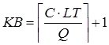
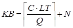
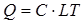
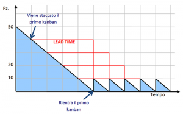

‘
Il dimensionamento del numero di Kanban necessari per gestire un determinato componente può essere eseguito applicando la seguente formula:

dove:
- C = Consumo massimo giornaliero che può verificarsi durante il lead time di ripristino
- LT = Lead time complessivo necessario per il ripristino
- Q = Numero di pezzi per contenitore o kanban (rappresenta una variabile indipendente)
Nel caso di Batch Kanban la formula precedente si modifica nel seguente modo:

dove:
- N = Numero di cartellini Kanban necessari per coprire il lotto minimo di fornitura (LM).

Le formule appena viste consentono di determinare il numero minimo di Kanban necessari per gestire un certo componente. Ciò consente, a regime, di limitare al minimo le scorte di quel codice che nel caso di utilizzo del Kanban tradizionale risultano essere in media pari alla capacità di mezzo contenitore. Proviamo a dimostrare tale affermazione con un semplice esempio.
Supponiamo di avere un consumo giornaliero di 10 pezzi con un Lead Time di fornitura di 4 giorni. Decidiamo che ogni Kanban contiene 10 pezzi. Applicando la formula vista prima, ciò significa che il numero totale di Kanban all’interno del sistema sarà pari a 5. Nel grafico sottostante è rappresentata l’evoluzione nel tempo della giacenza di questo componente nell’ipotesi di consumo e Lead time costanti. Come possiamo osservare il primo contenitore viene completamente esaurito al termine del primo giorno ed il suo Kanban staccato ed inviato al fornitore, il secondo kanban analogamente viene staccato al termine del secondo giorno e così via. Al termine del quinto periodo quando anche il contenuto dell’ultimo Kanban è stato completamente esaurito si ha il rientro del primo Kanban che è stato nel frattempo ripristinato. Il giorno successivo quando esso sarà nuovamente consumato avremmo il ritorno del secondo Kanban e così via con la situazione che si stabilizza nel tempo. Quindi, in presenza di un consumo costante e di un approvvigionamento puntuale la giacenza del codice a regime oscilla formando un dente di sega di ampiezza uguale alla capienza di un contenitore con valore medio pari a mezzo contenitore.

Scorta media con l’utilizzo del Kanban
L’esempio funziona, tuttavia, sotto le due importanti ipotesi fatte all’inizio. Nella realtà aziendale i consumi reali non sono mai perfettamente costanti, ma variano ogni giorno a seconda del numero degli ordini, del mix di produzione e dell’efficienza, ed anche il Lead Time di approvvigionamento varia a causa di problemi o ritardi. Per tali motivi è necessario lavorare incessantemente lungo due direzioni:
- Il livellamento della produzione per fare in modo che il consumo diventi il più possibile uniforme nel tempo. Se ciò non accade il sistema risulterà infatti soggetto ad oscillazioni che obbligheranno a dimensionare il numero di Kanban considerando il consumo massimo giornaliero onde evitare il rischio di stock-out.
- Il rispetto del Lead Time di fornitura. Se non si è in grado di garantire questa condizione sarà necessario introdurre un Lead Time di Sicurezza che genererà inevitabilmente un aumento del numero di Kanban e a catena un incremento delle scorte all’interno del sistema. Per superare questo inconveniente è necessario collaborare strettamente con i fornitori cercando di migliorarne la puntualità, la qualità e l’accuratezza della consegna.
In definitiva tanto più ci si allontana dalla situazione ideale tanto più è necessario correggere i termini delle formule precedenti andando inevitabilmente ad aumentare le scorte medie nel sistema.